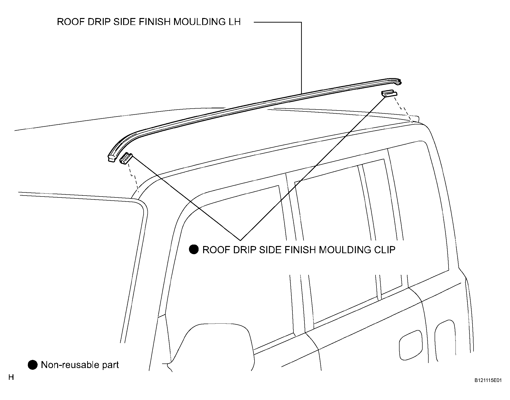

Home
>>
Scion
>>
2006
>>
xB Standard
>>
Repair and Diagnosis (Single Page)
>>
Body & Frame
>>
Exterior/Interior Trim
>>
Exterior
>>
Roof Drip Side Finish Moulding
>>
Components
Roof Drip Side Finish Moulding: Components
Fig 1: Identifying Roof Drip Side Finish Moulding Components

Courtesy of © TOYOTA, LICENSE AGREEMENT TMS1002